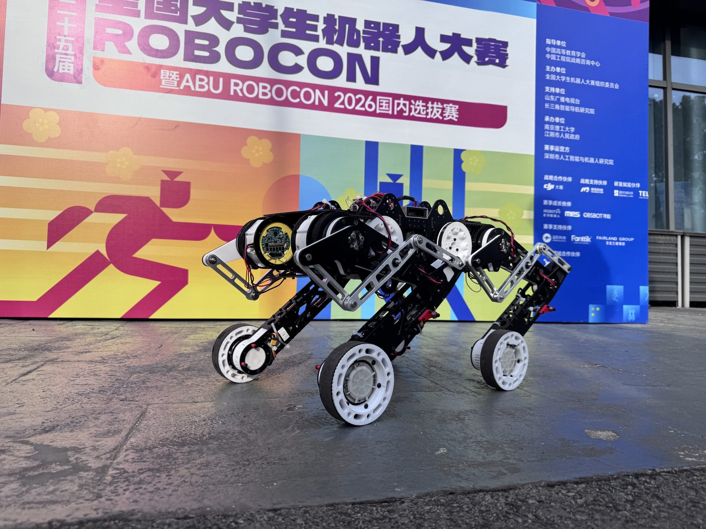
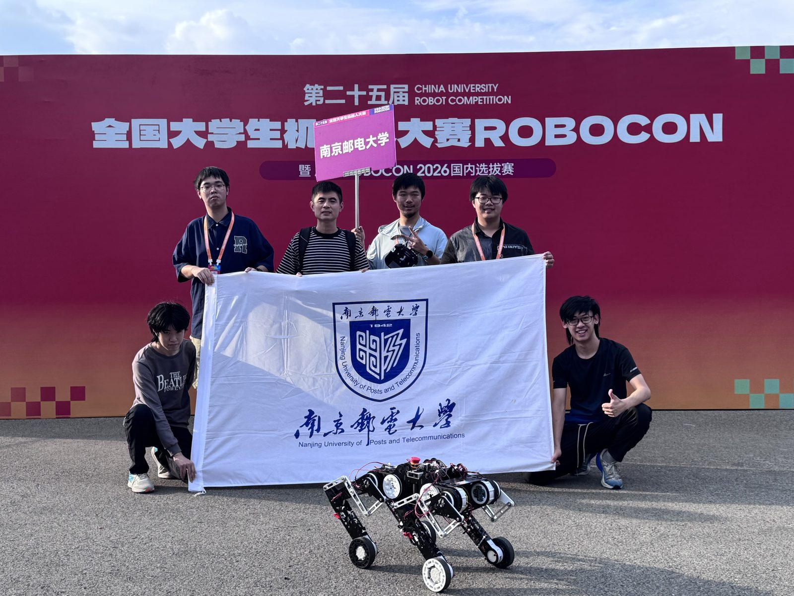

ROBOCON 2026
ROBOCON 2026 · 仿生足式机器人
现场记录
来自比赛与调试现场的照片。


负责电机调试、底层通信、运动控制算法和整机联调，完成驱动器、传感器与主控之间的接口验证。
面向复杂地形和连续任务，迭代电机参数与运动控制策略，提升机器人动作稳定性与任务执行一致性。
按模块测试、整机联调和赛场复测建立验证流程，定位并闭环处理通信、执行器和策略参数问题；根据赛场规则完成任务流程适配。
技术要点
面向复杂地形和连续任务，迭代电机参数与运动控制策略，提升机器人动作稳定性与任务执行一致性。
按模块测试、整机联调和赛场复测建立验证流程，定位并闭环处理通信、执行器和策略参数问题；根据赛场规则完成任务流程适配。
技术要点
- 电机参数整定与底层通信接口验证
- 复杂地形下的运动控制策略迭代
- 模块测试、整机联调与赛场复测流程